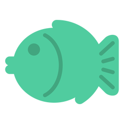

To spread awareness is to share this information that you on Instagram or Twitter to raise awareness. Also, helping bring interest to young adult in Japan. Support the Japanese government and break the Japanese tradition of the man does the work and the woman does the labor.
| Click the flag to go the homepage | Click the fish to see the issue | Click the school to see Japanese schooling | Click the cat to see the solution | Click the fan to see the impact |
|  |
|